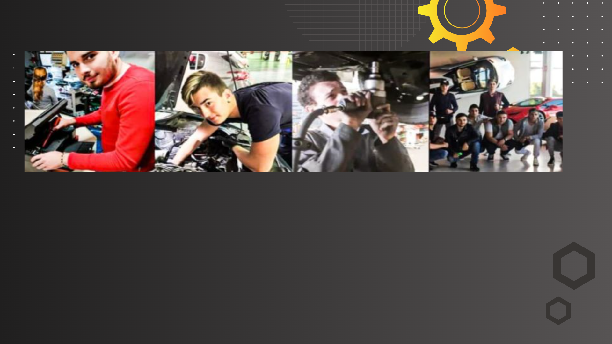
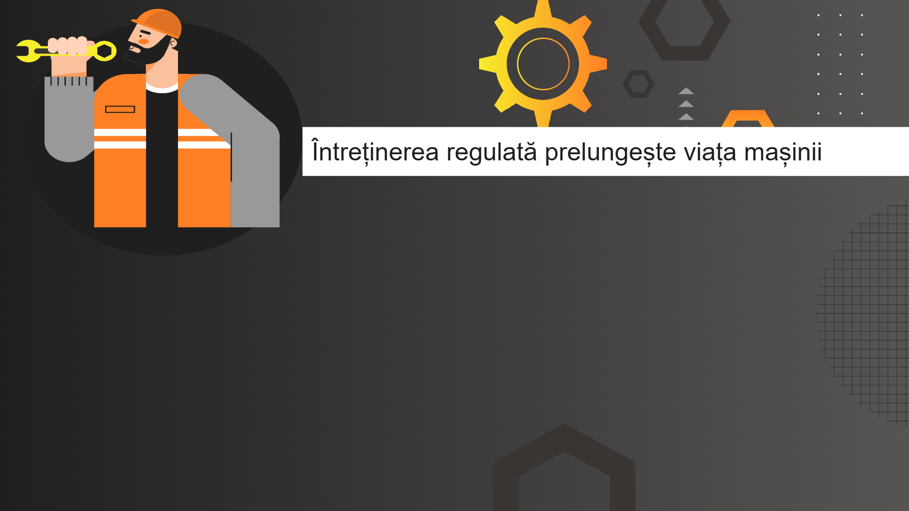
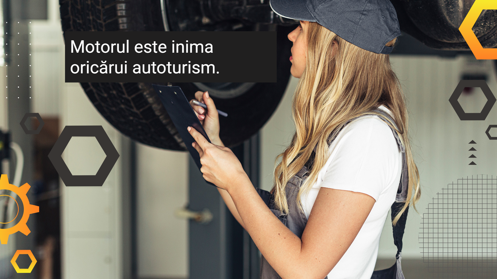

Motorul Otto
Motorul Otto este alcătuit dintr-un bloc care cuprinde cel puțin 4 cilindri. Fiecare cilindru conține:

Funcționarea Motorului Otto
Motorul Otto funcționează după 4 timpi:
- Timpul 1 - admisia
- Timpul 2 - compresia
- Timpul 3 - arderea + detenta
- Timpul 4 - evacuarea
→ Timpurile 1,2,4 = timpi morți (aducerea în parametrii mecanici)
→ Timpurile 3 = primirea forței mecanice
🔧Meseria de mecanic auto este una esențială în industria auto, implicând diagnosticarea, întreținerea și repararea vehiculelor.
Este o meserie potrivită pentru persoanele pasionate de mașini, care au aptitudini tehnice și sunt atente la detalii.🛠️


